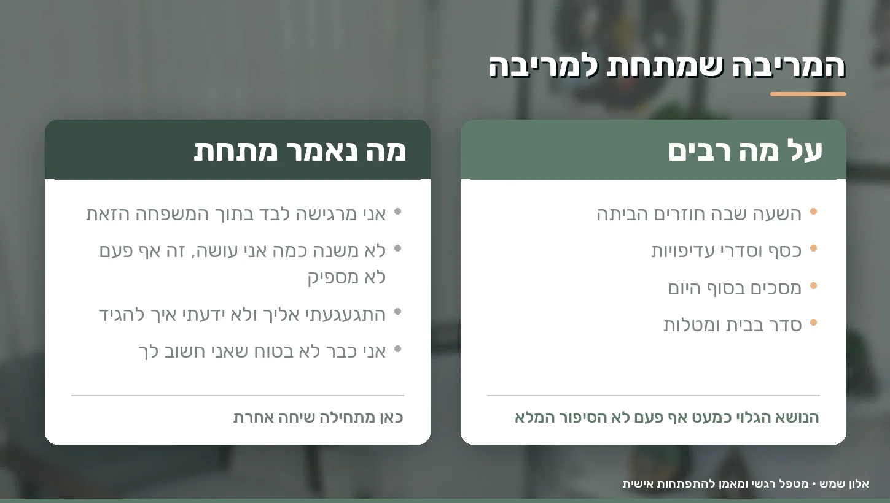
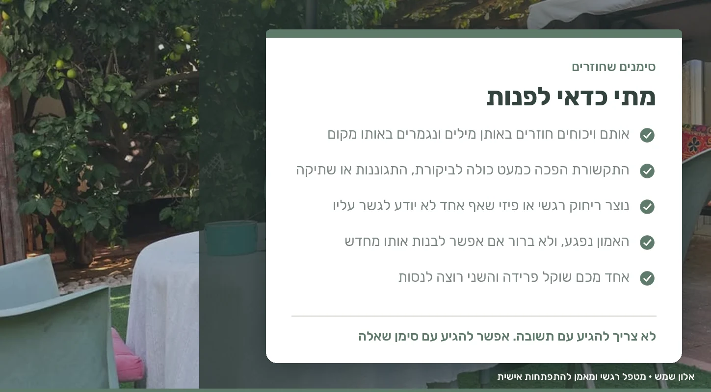

There's a moment when the word divorce stops being something thrown out in the middle of a fight, and becomes an option sitting quietly in the living room even after the fight is over.
Maybe you're already sleeping in separate rooms. Maybe every conversation ends in an argument, or maybe you've actually stopped fighting because there's no energy left. Maybe one of you has already said they want to end it, and the other is still asking to try. And maybe you're both simply tired, hurt, and unsure whether there's anything left here to save.
If you've landed here, the question going around in your head probably isn't "how do we get divorced". It's a completely different question: has the time really come to separate, or have we reached a place where we just can't see another way anymore?
It's a question worth stopping for. Couples therapy before divorce isn't meant to convince anyone to stay at any cost, and it doesn't judge those who choose to separate. It's meant to create a space where you can understand what has happened here, before making a decision that is hard to come back from.
How you reach the moment when divorce looks like the only way
A deep relationship crisis almost never starts in a single day. It builds slowly, in layers.
Another argument that ended without being resolved. Another disappointment kept inside because it didn't feel right to talk about it that evening. Another week where each of you is in your own world, less touch, less patience, more criticism.
Over time, you fall into a fixed pattern. One reaches out and the other pulls away. One demands to talk and the other shuts down. One feels unseen, and the other feels that nothing they do is ever enough. At this stage you're no longer fighting about the dishes in the sink or what time someone gets home. You're fighting about everything that has piled up underneath.
I call it the iceberg metaphor. What you see from the outside, the words and the slammed door, is the tip. Below the surface sit the patterns, the beliefs and the hurts that no one has ever spoken about out loud.
The real difficulty begins when you live inside this pattern long enough, and then you start seeing your partner through the crisis itself. Every sentence gets a negative interpretation. Even an attempt to get closer is met with suspicion or indifference, because you no longer believe it's genuine.
"We don't love each other like we used to". Is that necessarily the end?
Not necessarily.
A long relationship changes. The infatuation of the first year isn't supposed to look like the relationship after kids, a mortgage, aging parents and a routine that leaves no room to breathe. That change alone isn't a sign that something is broken.
Sometimes what feels like "the love is gone" is really distance that has built up over time. When there's a lot of anger and hurt, it's hard to feel close. When there's no closeness, intimacy suffers. And when intimacy disappears, it's very easy to conclude that there's no relationship left.
So before deciding that the feeling is gone, it's worth checking what is lying on top of it. Is there no love, or is there so much hurt that it's hard to reach it? These are two completely different questions, and the answer changes everything that happens next.
The fight beneath the fight
Say you keep fighting, again and again, about one of you coming home late.
On the surface, the argument is about the time. Underneath it, a completely different sentence may be sitting: "I feel alone in this family". Or: "I feel that no matter how much I do, criticism is always waiting for me".
The same thing happens in arguments about money, housework, phones, the families on both sides, the kids and sex. The visible topic is almost never the whole story.

In the room, we focus less on what you're fighting about, and more on what each of you is experiencing inside the fight. Once it becomes clear which need or which fear is sitting beneath the behavior, a different conversation becomes possible. Not because someone gave in, but because you're finally talking about the right thing.
The problem isn't who's right
One of the biggest traps in a relationship crisis is trying to decide who's to blame.
Each of you arrives with a list. Who invested more, who hurt whom first, who stopped making the effort, who said what three years ago and who needs to change. These lists are usually accurate on both sides, and that's exactly the problem. You can be right and miserable in the same breath.
A relationship isn't an argument that needs a ruling. You can certainly acknowledge the hurt, the mistakes and each person's own responsibility, but if the goal is to see whether things can be repaired, you need to look at the dynamic that has formed between you and not only at who started it.
Sometimes a small change in how one partner responds creates a completely different response in the other, and starts to break down a cycle that has been running for years.
And what if only one of you wants therapy
It's one of the most common situations I see, and maybe the reason you're reading this alone right now.
Partners don't always reach the same point at the same time. One wants to try, the other is already worn out, skeptical, or convinced it's a waste of time.
In a situation like this, it usually doesn't help to demand a big commitment along the lines of "we're going to save this marriage". You can start with a much more modest goal: let's understand what has happened to us before we decide. For many people, that door is easier to walk through.
And even if your partner isn't willing to come at all right now, you can start on your own. In individual work we look at your patterns, at what you can and can't influence, and at the boundaries you want to keep for yourself even in the middle of the crisis. We start from what you bring, not from what the other partner is or isn't willing to do.
What happens in the room with me
The first session is mostly about listening. I hear where each of you stands, what broke and when, and what each of you still wants. There's no single template that suits everyone, and we work at your pace.
One of the things I hear most often is "we've already talked about everything". That's true, and it's usually accurate too. The problem is that talking about the same thing again and again isn't the same as changing it. That's why the work moves between three layers:
- Awareness: identifying the patterns and beliefs that run the relationship behind the scenes, using tools from the field of NLP that work with patterns and habits
- Emotion: making room for what you feel, turning down the inner noise, and building a bit of calm to talk within
- Action: translating it into everyday behavior. How to stop an argument before it gets out of hand, how to say what you need without attacking, how to listen without already preparing your answer, and how to gradually bring back small acts of closeness
Sometimes I also use guided imagery, a directed story accompanied by relaxation and breathing, and sometimes inspiration cards, cards that combine an image and a word. They aren't fortune-telling cards but conversation openers, and they help especially those who struggle to find the words in front of their partner.
My clinic is at 51 Dubnov St. in Rehovot. It has a therapy room with a door that closes and soft light, and a green courtyard with a seating area, for those who find it hard to talk inside a closed room. You can switch between the two even in the middle of the process, and Zoom is also an option. I'm an emotional therapist and personal development coach, an NLP Master Practitioner certified by Yozmot College and a member of the Israeli NLP Association, certificate 11069, and all the details are on the About me page.
When to reach out
There's no single right moment, but there are a few signs that come up again and again among those who come at this stage:
- The same arguments keep repeating, in the same words, and end up in the same place
- Communication between you has become almost entirely criticism, defensiveness or silence
- An emotional or physical distance has formed that no one knows how to bridge
- Trust has been broken, and you're not sure whether and how it can be rebuilt
- One of you is considering separation and the other wants to try
- Neither of you knows whether you want to stay
You don't need to come with an answer. You can come with a question mark.

And what if you end up deciding to separate
That's a real possibility and I don't avoid it.
Couples therapy isn't measured only by whether you stayed together. For some couples, the couples process before the decision brings them back to conversation and a different kind of relationship, and for others it makes clear that separating is the right thing for them. The second outcome is worth the time too, because it comes from careful exploration and not from an outburst in the middle of the night.
And the way you separate matters enormously, especially when there are children. You may stop being a couple, but you don't stop being parents, and you'll keep meeting at ceremonies, parent-teacher meetings and birthdays for many years to come. A separation that comes after conversation, understanding and less hostility looks completely different from one that happens at the height of the storm.
When there are children at home
Children feel the tension even when parents are convinced they "don't fight in front of them". They pick up on silences, distance, and a small change in the tone at the dinner table.
In a period like this, one of the most important tasks is to keep, as much as possible, a separation between the couple's conflict and the parenting role. Don't turn the child into a messenger between the two rooms, don't ask them to take sides, and don't share details that aren't right for their age. And above all, don't give them the role of the one who comforts the parents.
If you notice that the tension at home is already weighing on the child, emotional support for children is also possible alongside the couples process.
When couples therapy isn't the right tool
There are situations where the first question isn't how to repair the relationship.
In situations of violence, fear, threats, control or coercion, whether directed at you or at the children, the first question is safety. Couples therapy assumes two people who are safe being in the same room, and when that assumption doesn't hold, it isn't the right tool. There are other situations too where individual work or turning to a different professional is more appropriate, alongside the couples process or instead of it.
If you or someone close to you is in distress right now:
- ERAN, emotional first aid: 1201, WhatsApp 052-8451201, SMS 052-9993544, and chat on their website
- NATAL: 1-800-363-363, 24 hours a day, every day of the year
- SAHAR: chat on their website
- Health fund support lines: Clalit *8703, Maccabi *3555, Meuhedet *3833, Leumit *507
A few questions to ask yourself just before the decision
- Do I really want to end the relationship, or do I mostly want the current pain to stop?
- Have I told my partner what I really need, or mostly what they're doing wrong?
- Have we tried to change the dynamic between us, or do we keep returning to the same conversation in different versions?
- Are there still moments of affection, friendship or caring between us, even if rare?
- And if there were a real chance that our relationship could look different, would I want to try?
There doesn't have to be an immediate answer. Sometimes just having a safe place to ask the question is already the beginning of change.
Questions I'm often asked
Can couples therapy prevent divorce?
No outcome can be guaranteed, and that isn't exactly the goal anyway. The process helps you understand the difficulty, identify the patterns that keep repeating, and see whether there is the will and the ability to create change in the relationship. The decision remains yours.
Can I come without my partner?
Yes. Some of the people who come to me at this stage come alone, because the other partner isn't ready yet or because they first want to understand what they themselves want. We start from what you bring, and sometimes a change in one partner shifts the dynamic at home as well.
We've already decided to divorce. Is there any point?
Sometimes, yes. If the decision isn't final yet, this is the place to explore it. And even when it is final, guidance can help you go through the separation in a more respectful way, especially when you have children together and will go on being parents together.
How long should we give the process before deciding?
There's no number of sessions that suits everyone. It depends on how deep the crisis is, how long it has been going on, and how willing you both are to work. After the first session we can usually talk about a rough time frame, and we work at your pace.
Can we work on things even after trust has been broken?
In many cases, yes, but it's a process, not a declaration. Real forgiveness isn't "let's just forget about it". First you need to understand how deep the hurt goes and give it room, and only then look at how to rebuild a sense of safety. Whether it's a fit depends on both of you and on the circumstances.
If the word divorce is already on the table and part of you still wonders whether things could be different, you can start with a conversation. You don't need to come with a decision to stay. It's enough to come with a willingness to explore. The first step is yours to take - everything after that we do together.